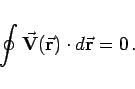
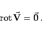

Inhalt Index DeskTop Bronstein

 Vektoranalysis und Feldtheorie Integration in Vektorfeldern Kurvenintegral und Potential im Vektorfeld Konservatives oder Potentialfeld
Vektoranalysis und Feldtheorie Integration in Vektorfeldern Kurvenintegral und Potential im Vektorfeld Konservatives oder Potentialfeld


Von einem konservativen Feld oder einem Potentialfeld spricht man, wenn der Wert P des Kurvenintegrals (13.96a) in einem Vektorfeld nur von der Lage der Punkte A und B abhängt und nicht vom konkreten Integrationsweg zwischen diesen beiden Punkten.
Der Zahlenwert des Umlaufintegrals in einem konservativen Feld ist stets gleich Null:
|  | (13.103) |
Ein konservatives Feld zeichnet sich immer durch Wirbelfreiheit aus:
|  | (13.104) |
Umgekehrt ist diese Gleichung die notwendige und hinreichende Bedingung dafür, daß das Feld konservativ ist. Dazu muß weiterhin vorausgesetzt werden, daß die partiellen Ableitungen der Feldfunktion nach den enthaltenen Koordinaten stetig sind und der Definitionsbereich von  einfach zusammenhängend ist. Für ein dreidimensionales Feld hat dieser, Integrabilitätsbedingung genannte Zusammenhang in kartesischen Koordinaten die Form
einfach zusammenhängend ist. Für ein dreidimensionales Feld hat dieser, Integrabilitätsbedingung genannte Zusammenhang in kartesischen Koordinaten die Form